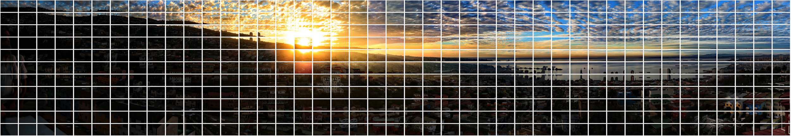
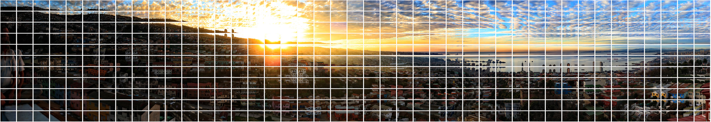
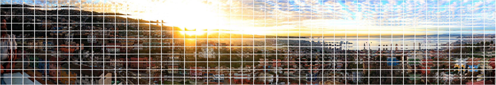
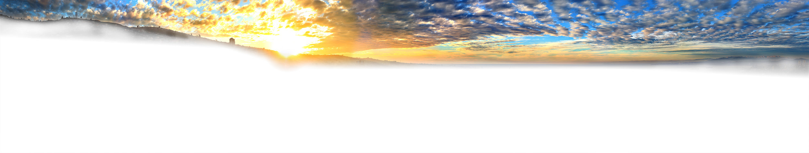
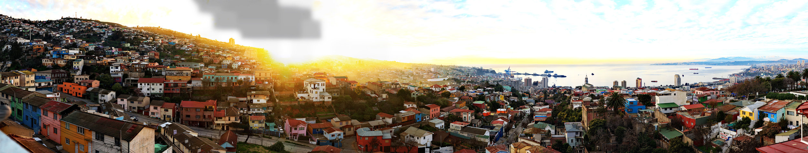
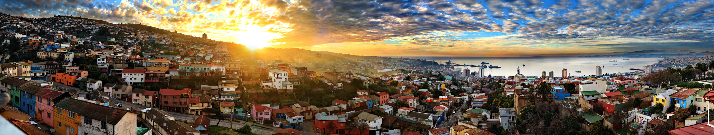

August - October 2012 Post Processing phase 1
This was one of my first attempts at using exposure bracketing, and on the bus back to Santiago, looking through the images on the camera, I knew I had something special. It would be two weeks before I was back in front of my computer and could begin the stitching process, which turned out to be the first of many delays in working on this print. Igor who had been so wonderful in helping me find the location, was very persistent in asking about when the picture would be ready. I believe he was probably as excited about what was to come as I was apprehensive.
Stitching
My computer at that time took over four hours to do initial control point identification, and a full stitch was running about ten hours. The majority of the picture was stitching just fine, but the stretch of horizon that did not have anything but those beautiful hues lacked any real edges for the stitching software to use as alignment points. The process became very protracted, and getting all the layers to line up properly proved a bit challenging. I eventually gave up on getting a perfect stitch and addressed the distorted horizon manually in photoshop.
Photoshop Post Processing
After spending a good bit of time manually matching individual pictures back into the panoramic to fix the "dip" in the horizon I started to work on the HDR process. While the stitching software offered some strong HDR processing, I never liked the way the final product looked. I started to experiment with using photoshop layer masks to bring out the layer I wanted to use in each part of the picture. This was a real learning process and took months before I felt like I had something that looked good.
Initial Publication
The first run of prints for this image were very popular, and sold in canvas prints ranging up to 10' wide. This first run was based on the raw images with no filter processing and the colors, while nice, were not quite as bold as I had remembered.
April 8, 2017
After 5 years of doing gigapixel panoramics I felt that I had significantly improved my skills in the stitching and post process, and fallen in love with a haze neutralizing filter that seemed to make the colors pop even in those long focal length shots. I went back into the archives and found all of the original images, and processed them through the new filter and embarked on completely recreating this image. The filtered images are shown below organized into the three exposure layers.



June 18, 2017
Now on my new computer, the initial control point detection took less than two hours, and a full stitch was complete in just over four hours. This allowed me to spend only a couple of weeks in the stitch portion of post, and after some frustration and about 15 full stitches I finally got a perfect stitch, with the horizon properly aligned and all the colors where I wanted. The photoshop post processing this time went much faster as my skills in the techniques had improved, and I was ready to print in just a couple of weeks. The final layers of exposure are shown below.


June 21, 2017
For this new print I wanted to really step up my printing game, so I started looking for a new Fine Art print service. What I found was French Broad Imaging and Josh Niven. The work he did printing, sealing and framing this image is AMAZING and we now have limited edition 5-year anniversary prints available. The color in this new image is mesmerizing and the printing brings the resolution to bear in a dramatic way.

July 21, 2017 - 5 years after the original shooting. Limited Edition 5-yr Anniversary Prints now available!